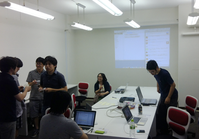

日時会場日時：2012/08/04(土) 13:00 〜 18:00会場：天神ベース （福岡県福岡市天神4-7-11 第1大西ビル4F） 今日のネタはじめに運営３人（やいぶさん・西嶋さん・我流さん）が不参加です！天神ベースでの初の開催です！ grooweb西が初仕切りです！ 今回も初参加が多いですね。 日本語WEBフォント、今後はやるのか？《轟木さん》
ポートフォリオ作りってどうしてますか？《本田さん》
HTML5を実務で使っていますか？《森さん》
クライアントから提供された素材や原稿などのデータは制作後どうする？《安武さん》
facebook導入について《入江さん》
自営業の方にオトクな健康診断「よかドック」《西さん》
target="_blank"まだ必要？《徳永さん》
ストレス解消どうしてる？《武末さん》
バージョン管理のオススメは？《上田さん》
勉強会って有料・無料どっちがいい？《赤瀬さん》
参加者西洋平（grooweb／フリーランス）-幹事赤瀬剛（グルービーモバイル株式会社） 上田和広（one push／フリーランス） 光安克夫（株式会社エーワン）-初参加 武末有希子（pom factry／フリーランス） 徳永佳明（有限会社ウェブスミス） 入江啓介（インターネットステーション） 轟木義久（インターネットステーション）-初参加 安武正博（nonflash／フリーランス）-初参加 森由佳（有限会社九州デザイン） 本田小織（学生／就職活動中）-初参加 ※順不同敬称略 |
レポート >